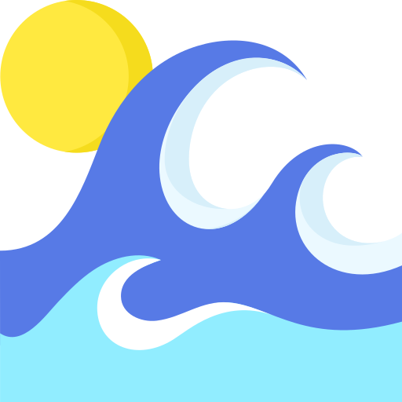

I'm Cristina
and those are my passions.


I'm a Front Desk Manager to Vivo Concerti.
Basically I talk for work! I have many passions, sometimes a bit nerdy 😏

Both of my parents originally came from Sardinia. I've always been thinking this is the reason why I love the sea and the beach so much. I could stay in the water for hours... Like a fish 🐡🐡🐡
What can I say... I love to eat, I love to cook!🍳 I adore trying new recipes from all over the words. 🥟Indian, Japanes, Italian, I can't choose what I prefer! 🍛 I enjoy when people are happy about something I cooked.🍽️
Last but not least, my videogame passion. Sometimes this is more like an addiction; what should I say? I love to play video games; pc, console, or mobile phone doesn't matter if I can play something.🎮
Send me an email or follow me on social media.
Contact Me